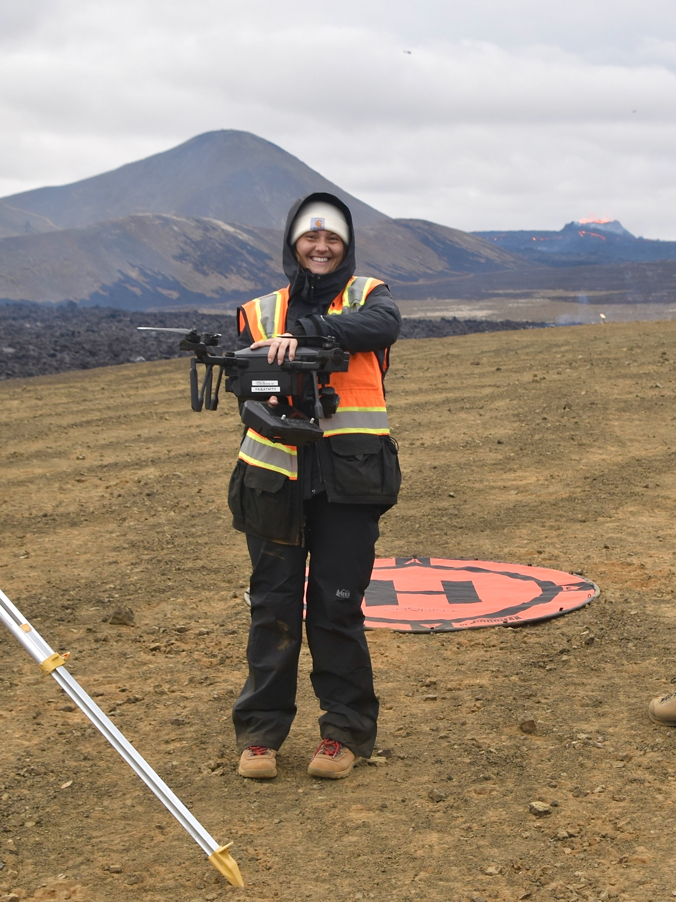
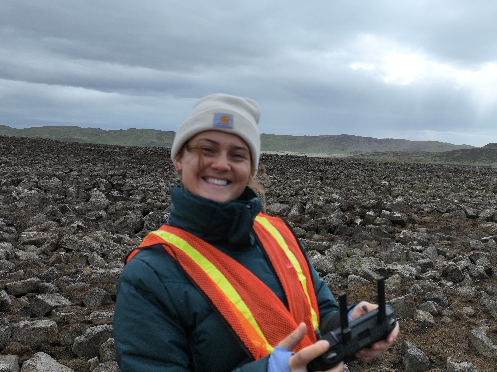
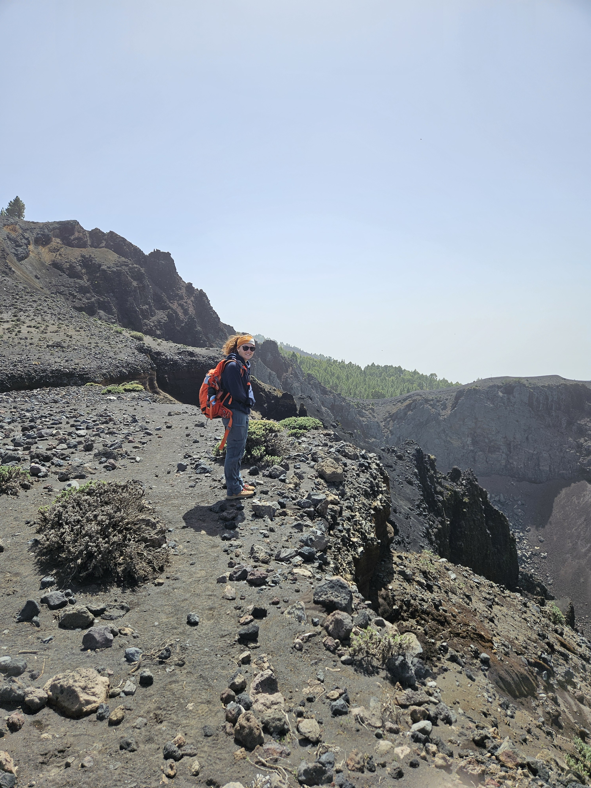
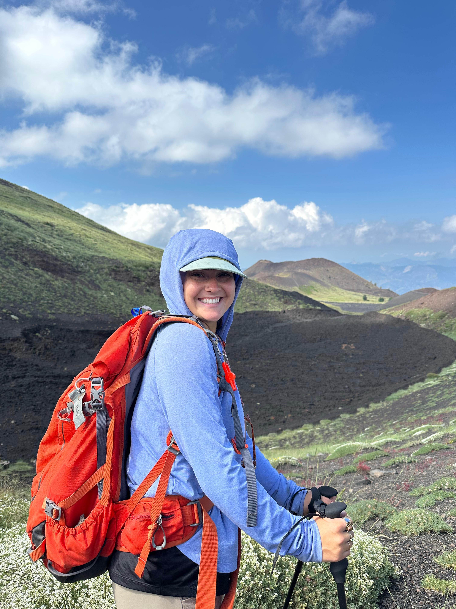
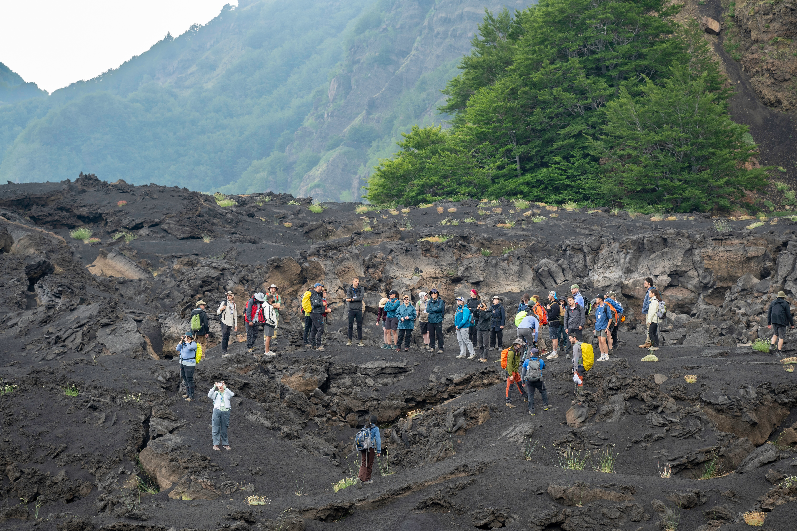
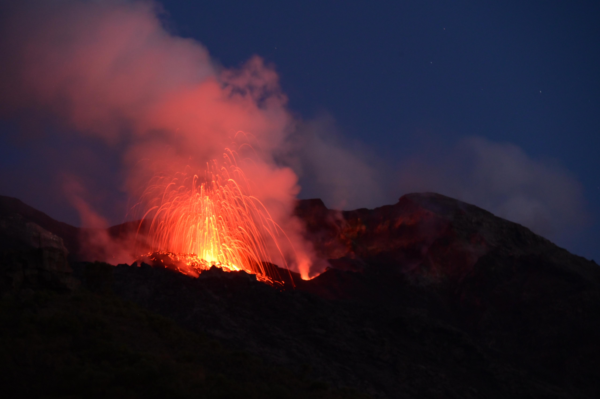

Fieldwork
Active volcanoes
as field laboratories.
Fagradalsfjall, Iceland
Primary field site — Reykjanes Peninsula eruptions; lava facies mapping, drone surveys, sample collection

photos/iceland-1.jpg

photos/iceland-2.jpg

photos/iceland-3.jpg
La Palma, Canary Islands
Tajogaite eruption fieldwork; comparative basaltic flow morphology

photos/lapalma-1.jpg

photos/lapalma-2.jpg

photos/lapalma-3.jpg
Italy
Etna and related volcanic systems; active lava field observation

photos/italy-1.jpg

photos/italy-2.jpg

photos/italy-3.jpg